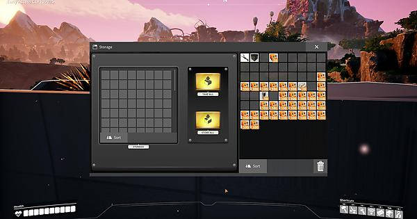
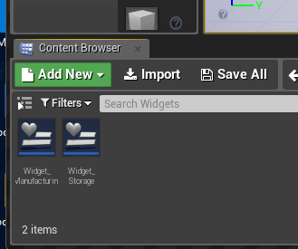
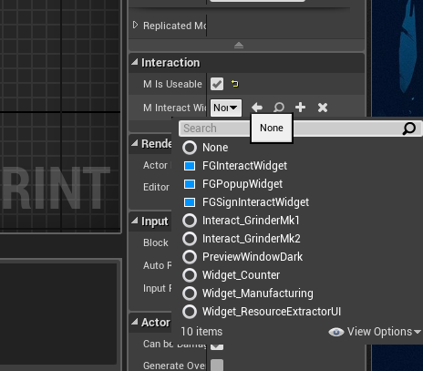

ok, I did that and I removed the old widget. that was in the folder and I change it back to the Widget_Storage. Getting ready to try again
Inventory and Storage
ok, well I tied it again and it still doesn’t show the widget. I’m stump

It does work for me. Check again for leftover Widget_Storage s (you can go to FactoryGame folder and type Widget_Storage in the search bar, find all that are not the one in the correct folder) then go back and check in the building set the interact widget to Widget_Storage
Yes, I did, I fount another one in one other folder. I deleted it and when I went back to the warehouse to make sure that set. and it’s not, so I wanted to add it from the drop down, list. Had an issue. The file is still in the right place. 
As I was looking in the drop down list. The Widget_Storage is missing.

Any idea why it’s not showing up in the list
Update: I fount out that the widget is a Userwidget and I changed it to interactive widget. Going to test it now. Bingo. That worked, Thanks @mircearoata I owe you one, Now I just need to get this item counter going.